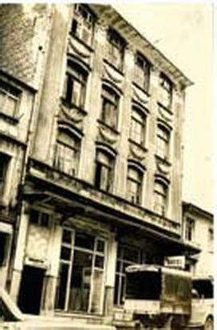
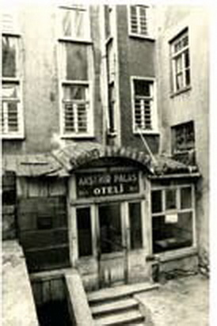
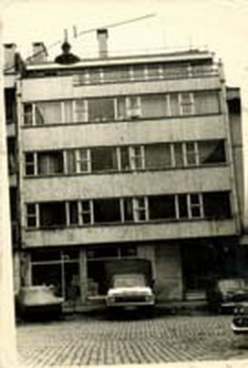
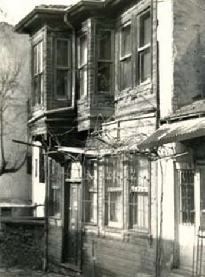
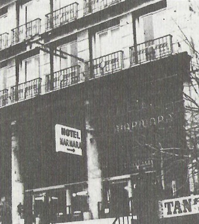
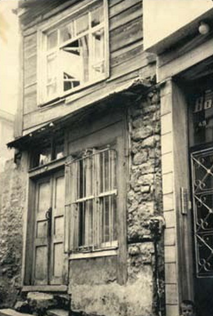
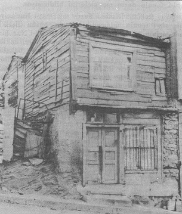

|
Ýstanbul Dönemi |
  
|
|
Ýstanbul Dönemi |
|
Ýstanbul Dönemi

Gençlik Rehberi dâvasýnýn görüldüðü eski adliye, þimdiki PTT müzesi.

Üstadýn Ýstanbul - Fatih'te kaldýðý Reþadiye Oteli

Üstadýn Ýstanbul - Sirkeci'de kaldýðý Akþehir Palas Oteli

Üstadýn Ýstanbul - Çemberlitaþ'ta kaldýðý Piyer Loti Oteli

Bedüüzzaman'ýn 1953'te bir süre kaldýðý, Þekerci Þükrü Bey'in Üsküdar'daki evi.

1953'te Üstad'ýn birkaç gün kaldýðý Beyazýt'taki Marmara Oteli

Bediüzzaman, 1953'teki istanbul seyahatinde, Mehmet Fýrýncý'nýn ailesine ait bu evde üç ay kaldý.
Bediüzzaman 1953'teki istanbul seyahati sýrasýnda Marmara Palas Otelinde kalýrken,
Mehmet Fýrýncý onu görebilmek ümidiyle otele gider. Oradan ayrýldýðýný öðrenir.
Sonra sýrasýyla Beþiktaþ, Süleymaniye ve Küçük Çamlýca'da bulunabileceði yerlere gider;
fakat oralardan da ayrýldýðýný öðrenir. Bir türlü Üstada kavuþamaz; izini kaybetmiþtir.
O gece saat 1 'e doðru Muhsin Alev'i bulur ve telâþla sorar: "Neredesiniz, sað mýsýnýz? Üstad nerede?"
Muhsin Alev Üstadýn Baðlarbaþýnda, Helvacý Þükrü Efendinin evinde olduðunu söyler.
Fakat Üstad "Bana ahþap bir otel bulamazsanýz yarýn Ýstanbul'u terk edeceðim" demiþtir.
Bu söz Mehmet Fýrýncý'ya çok dokunur. Çaresizlik içinde düþünürken,
aklýna, Çarþamba'da ailesiyle birlikte oturduklarý ev gelir.
O gece eve koþar, annesiyle babasýný uyandýrýr ve Bediüzzaman'ýn evlerinde kalmasý fikrini onlara açar.
Her ikisi de bu fikri derhal kabul eder. Ertesi gün Bediüzzaman gelir, evi beðenir.
Bu arada Fýrýncý'nýn annesi, babasý ve kardeþleri de Üstad ile tanýþmanýn mutluluðunu yaþarlar.
Ve Üstad Bediüzzaman, o andan itibaren üç ay süre ile o kutlu evde kalýr.
Mehmet Fýrýncý'nýn anne ile babasý ise, ayný sokakta çalýþtýrdýklarý fýrýnýn üstündeki iki odalý eve geçerler.

1953 yaz aylarý, Üstadýn iki ay kadar kaldýðý Fatih-Çarþamba, Fethiye Sk. No:47' deki ev.